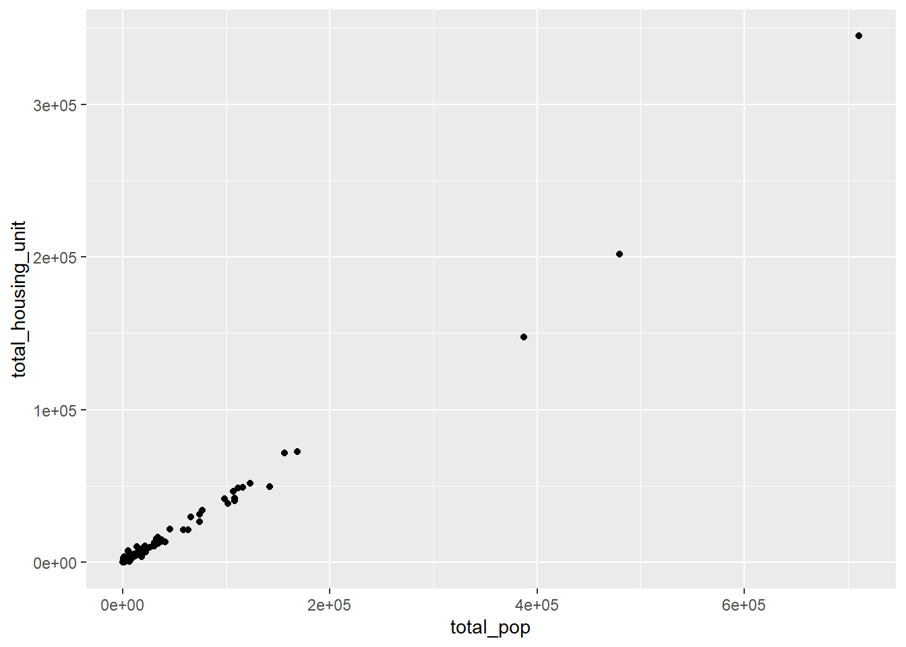
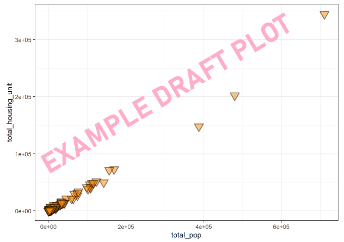

Chapter 2: Data, Variables & Scientific Calculator
2.1 Lab Goals
After completing this chapter, you should be able to:
- Understand what is ‘variable’ in R and how to create it.
- Know different data types and distinguish them
- Clean, calculate and manipulate different data types
- Create simple scatter plots using the package “ggplot2”
2.2 Good Practice
2.2.1 Organizing Folders
After creating and organizing your folders in Lab 1.2, you should have a dedicated folder for this course, and also a series of folders of labs and assignment.
If you have not yet done so, please complete the steps in Lab 1.2.
Please go to your lab2 folder. Download the ‘Lab 2 report template’ file to this folder.
2.2.2 Housekeeping
We’ll use RStudio again for this chapter. Please launch RStudio as we have explained in Chapter 1.3.
(Note: if you are using computers in COH 329 and having troubles, please let me know which computer it is. With Mr. Matthew Gottfried, we will work on resolving the issue.).
Before starting any works, please make sure you are in fresh new project with a blank script. Please follow the action checklist below:
- Step 1: Is the previous project “Lab 1” closed?
- If not, please close it by going to File –> Close Project –> Save changes.
- Step 2: After properly closing “Lab 1”, let’s create a new project for Lab 2. Specifically, go to File –> New Project using Existing Directory, navigate to lab2, click open, then Create Project.
- Step 3: Create a New Script by go to File –> New File –> R Script.
- Let’s Save the script first before writing any codes. To save it, go to File –> Save –> give it a proper name, e.g., lab_2_script
At this step, you should see something similar to Figure 2.1. If you have any questions about the above steps, please refer to Chapter 1.3: Launching RStudio for detailed instructions.

2.3 Intro to Programming using R
R is a mixture of programming paragrams (Cotton, 2013). At its core, it is an imperative language.
An imperative language provides step-by-step instructions for a computer to perform a task. Your write a script that does one calculation after another. Therefore, the order to run codes in your script can affect outcomes.
But it is also supports object-oriented programming and functional programming.
Object-oriented programming (OOP) is based on the concept of objects, which can contain data and code. Data in the form of fields (e.g., variables) and code in the form of procedures.
Functional programming is constructed by applying and composing functions. In R functions are first-class objects. You can treat them like any other variable and call them recursively.
2.3.1 Variables & Data Types
Note: the codes below are pretty simple. Please try to re-write them by yourself and understand the purpose of each line.
In R, when creating variables, we use the Assignment
Operator: <-
The shortcut to write <- is to press
Ctrl and - together .
Let’s create some variables.
- Integers (int) are whole numbers, e.g., 1, 10, -10. The code below create a new variable var_int, and we set var_int to 10.
Run the code below and observe what do you see in the Environment panel on the top-right corner (see Figure 2.2). Do you see a new variable “var_int”?
var_int <- 99
We can also create consecutive integers by using the symbol
:
# create consecutive integers
var_ints <- 1:5
# let's check this variable
print(var_ints)Commenting using hash tag #
- The symbol
#is used to write comments. - Comments are completed ignored by R and just there to make the code
more readable.
- Other numerics such as the floating-point number (float) often includes a decimal point, e.g., 3,14, -99,99, 5.0.
# Let's create floats by using the coordinates of UCCS as an example
var_long <- -104.801
var_lat <- 38.892 - Characters are used to store text (also called
“strings”). To indicate something is a character, we put quotation
marks around it
"".
# Create a character to indicate a city name.
var_char <- "Colorado Springs"
# Check the class of this variable "var_char"
class(var_char)- The Logical class only has two possible values:
TRUEorFALSE. They can also be written asTorF, but never true or false because R programming is case-sensitive. Logicals are useful to evaluate logical statements.
# We can ask the machine to compare numbers. For example, we assign values to "a" and "b".
a <- 0
b <- 5
# Then, we ask the machine to compare the two values.
a > b## [1] FALSE- A vector is an ordered set of values by using the
function
c(). Vectors are extremely important in statistics and data science, since we usually want to analyze a whole dataset rather than just a piece of data.
# Vector can include a series of numeric values, by specifying them one by one
var_vec_num1 <- c(478961, 715522, 108250, 386261)
var_vec_num1
# or by using the symbol : to create consecutive integers
var_vec_num2 <- c(1:10, -99:-95)
var_vec_num2
# Vector can also include characters
var_vec_char <- c("Colorado Springs", "Denver", "Bouder", "Aurora")
var_vec_char
# or a mix of characters and numeric values
var_vec_mix <- c(1,3,5, "Aspen", "Pueble", 99)
var_vec_mix2.3.2 Data frame Basics
Data frames are the most fundamental data structure in R.
- They are used to store spreadsheet-like data.
- They are also the most widely used format to clean, manipulate and analyze data.
- It provides a table-like way to organize multiple vectors into one object.
- We can use the function
data.frame()to create data frames. Read the documentation of the functiondata.frame()
Let’s use the function data.frame() to create a data
frame called “df_city_pop” to record the number of population
in four cities in Colorado.
In previous step, we have created two vectors var_vec_char and var_vec_num1. While the former one includes the names of four cities in Colorado, the later one denotes their population counts.
Let’s combine the two vectors together into a table with two columns:
“city” and “population” by using the function data.frame().
Then, we save this table under the variable name
df_city_pop.
Hint: to make this code work, you need to select all four lines and run them together.
# Create a table with two columns ("city" and "population") and four rows
df_city_pop <- data.frame(
city = var_vec_char,
population = var_vec_num1
)After ruining the code above, do you see a new variable df_city_pop in the Environment panel? Try to click on that variable and see what happens. Do you see the table?
[Q1] Please capture a screenshot of the table and paste it to your “Lab2 Report”.
2.3.3 Scientific Calculators
Please close the table df_city_pop and go back to your script.
The symbol $ allows us to extract a particular column
“B” from a data frame “A” by using the. Its syntax is A$B.
Next, we calculate some statistics for the four cities in the
data frame df_city_pop.
# Let's print all the values in the "population" column
print(df_city_pop$population)
# Calculate the total number of population
sum(df_city_pop$population)
# The mean value
mean(df_city_pop$population)
# Median
median(df_city_pop$population)2.4 Cities and Towns in Colorado
2.4.1 Reading an External .csv File as a Data Frame.
In this section, we will play with an external dataset about population and housing units in cities and towns in Colorado!
I have used US Census Bureau to collect this data, and then cleaned and reorganized it. This original data was collected by US Census Bureau on 2022 through the 5-year American Community Survey (ACS) survey. US Census Bureau contains a lot of good datasets. You will need to use it to collect data for your Assignment 2, but that’s another story.
Let’s pull the data in straight from this link.
We will use the function url() to specify the link to
extract data, then use the function read.csv() to load it
as a data frame, and save it into a new variable “co_data”.
co_data <- read.csv(url("https://raw.githubusercontent.com/fuzhen-yin/uccs_geoviz/refs/heads/main/docs/data/00_ACS_5yrs_estimate_2022_places_colorado_population_housing.csv"))Click on co_data in the Environment panel and examine the table a little bit.
[Q2] Report the following information to your “Lab2 Report”. In the table, by clicking a particular column name, you can order the table based the column’s value (see Figure 2.3).
- How many rows or records in this table?
- How many columns and what are their names?
- What are the top three cities with the highest number of populations and housing units?

2.4.2 Descriptive Statistics
In this section, we will examine the table “co_data” by columns.
The function names() can list all column names in a
particular data frame, in our example, “co_data”.
names(co_data)Next, we check their data types using str(). While
“name” is chr (characters), the other two columns
“total_pop” and “total_housing_unit” are int
(integers).
str(co_data)For these two numerical columns: “total_pop” and
“total_housing_unit”, we calculate their basic statistics by using the
function summary.
The summary() function gives us the (1) minimum, (2)
1st quartile, (3) median, (4) mean, (5) 3rd quartile and (6)
maximum.
Remember the symbol $, we will use it again to pull out
a particular column from the table “co_data”.
# First, let's calculate the statistics of "total_pop"
summary(co_data$total_pop)## Min. 1st Qu. Median Mean 3rd Qu. Max.
## 0 228 820 10406 4770 710800[Q3] Please use the summary function to
calculate the descriptive statistics for the column “total_housing_unit”
and paste the outputs to “Lab2 Report”.
2.4.3 Visualization
We are going to use the library ggplot2 visualization.
ggplot2 is a very popular open-source data visualization
package. Let’s install the package first using the function
install.packages().
Normally for a specific computer, we only need to install a package once. Then it will be attached with the R environment.
# install packages (only need to install once)
install.packages("ggplot2")After installation, let’s call the package in our current script.
Evertime we reo-pen an R project, We need load the library using the
function library().
# launch it (have to launch it everytime we open RStudio).
library(ggplot2)This chapter is already pretty lengthy. Let’s just do some basic visualization stuff and we will go back to this package for much cooler visualization later this semester.
We create a scatter plot to explore how cities’ total population are associated with the numbers of their total housing units.
ggplot(co_data, aes(x=total_pop, y =total_housing_unit )) +
geom_point()
We can improve the design of this scatter plot by using different color palette, background color, transparency etc.
color =: shape outline color;fill =: shape fill color;shape =: shape. Please see Figure 2.4 for shape codes.
alpha =: shape transparency where 1 means non-transparent, and 0.5 means 50% of transparent.size =: shape size;stroke =: stroke.
Here are some color palette inspirations in Canva Color. We can use the Hex Color Code (a six-digit number, preceded by a hash symbol “#”, e.g., #fb8500),to specify a particular color.

ggplot(co_data, aes(x=total_pop, y =total_housing_unit )) +
geom_point(
color="black",
fill="#fb8500",
shape=25,
alpha=0.5,
size=4,
stroke = 1
) +
theme_bw()
[Q4] Based on the code above, please
make some changes to the plot and paste the final
scatter plot to your “Lab2 Report”.
2.5. Close & Exit
To close an R project, please go “File”–> “Close Project” – a pop window asking “Do you want to save these changes” –> “Yes”.


References
Cotton, R. (2013). Learning R: A step-by-step function guide to data analysis. ” O’Reilly Media, Inc.”.